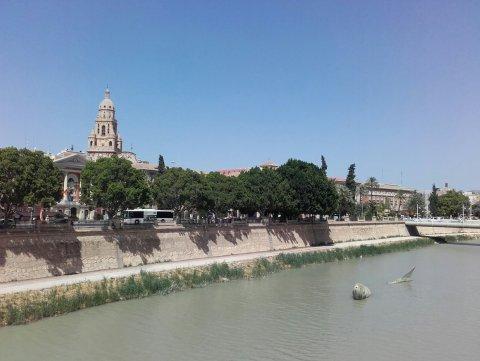
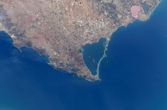
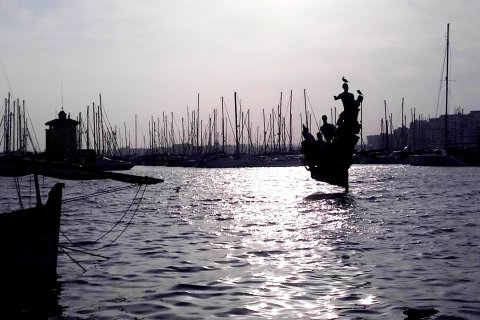
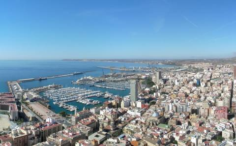

Costa Cálida/Costa Blanca
Murcia
Murcia is the capital and most populous city of the Autonomous Community of the Region of Murcia, and the seventh largest city in the country, with a population of 450,000 inhabitants. It is located on the Segura River, noted by a climate with hot summers, mild winters, and relatively low precipitation.
Highlights for visitors include the Cathedral of Murcia and a number of baroque buildings, renowned local cuisine, Holy Week procession works of art by the famous Murcian sculptor Francisco Salzillo, and the Fiestas de Primavera (Spring Festival). The city, as the capital of the comarca Huerta de Murcia is called Europe's orchard due to its long agricultural tradition and its fruit, vegetable, and flower production and exports.
Cartagena
Cartagena is a major naval station, and with a population of 220,000 inhabitant the Regions second largest municipality. Cartagena lies on a deep bay of the Costa Cálida directly on the Mediterranean sea and is one of the most important commercial ports of Spain as well as its most important naval station.
La Manga del Mar Menor
The Mar Menor is a salty lagoon separated from the Mediterranean sea by a sand bar 22 kilometres in length and with a variable width from 100 to 1,200 metres. It has a surface area of nearly 170 km2, a coastal length of 70 km, and warm and clear water with relatively high salinity, which does not exceed 7 metres in depth. It belongs to four municipalities, including Cartagena. It is one of the Specially Protected Areas of Mediterranean Importance by the United Nations. Its five volcanic islands (Perdiguera, Mayor or del Barón, del Ciervo, Redonda and del Sujeto) just like El Carmolí and San Ginés hills, the Hita and Amoladora beaches, the Lo Poyo salt marsh and the salt mines of Marchamalo are protected as well
San Javier
San Javier is a small town 33 km south-east of Murcia. It has 30,000 inhabitants on an area of 75,10 km². It is best known for its international airport located there, Murcia-San Javier Airport (span. Aeropuerto de Murcia-San Javier), which is the largest in the Region of Murcia. It is also the base of the Spanish air force academy (Base Aérea de San Javier), which lies in the quarter Santiago de la Ribera to the south, directly on the Mar Menor.
Orihuela
Orihuela is located at the feet of the Sierra de Orihuela mountains. The city of Orihuela had a population of 34,000 inhabitants. The municipality stretches all the way down to the Mediterranean coast, west of Torrevieja, and had a total population of 92,000 inhabitants. The river Segura flows through the city. Orihuela is the capital of the region of the "Vega Baja del Segura". The holiday celebrations: the processions of Holy Week, and the parades of Moors and Christians, in July, are well-known celebrations.
Orihuela Costa
The coastsal part of Orihuela is called Orihuela Costa or Playas de Orihuela. Orihuela Costa includes 57 urbanizations. The most important ones are: Dehesa de Campoamor, Cabo Roig, Playa Flamenca, La Zenia, La Regia, Las Mimosas, Los Dolses and Villamartín.
Torrevieja
Torrevieja is a seaside city and municipality about 50 kilometres south of the city of Alicante and has a population of 105,000. Torrevieja was originally a salt-mining and fishing village as it is located between the sea and two large salt lakes, which give Torrevieja a healthy microclimate. Torrevieja is a multicultural city and has more foreign inhabitants than Spaniards. It is a melting pot with 121 different nationalities.
The salt lakes are an important refuge for rare water birds. The municipality has great beaches, starting in the north with the "La Mata"-beach, with fine white sand. The beautiful rocky bays of "El Mojón" and "Las Zorras" are also well known. The beaches of "La Mata", "Los Locos" and "Del Cura" are connected by a maritime promenade. Also worth a walk is the harbour dam "Dique del Levante"
Guardamar del Segura
Guardamar del Segura is the mouth of the river Segura. It is a Mediterranean resort, with a large pine forest abutting an 11-km-long white sand beach. It lies about 35 km south of Alicante and 14 km north of Torrevieja.
Guardamar del Segura is the southernmost point where Valenciano is spoken. The town is well known for its pine forests on the sea, which were planted at the beginning of the 20th century, to prevent the continuous growth of the dunes that threatened to bury the whole village. The fine, 11 km long beach of Guardamar is regarded as one of the most beautiful in Spain, not least because of the nearby pine trees, inviting long walks through the extended vegetation. The parks of "Parque Alfonso XII." and "Parque Reina Sofia" also attract visitors throughout the year, for walks, picnics, jogging or just relaxing.
Santa Pola
Santa Pola has an area of 58.6 km2 and has a population of 30,000 inhabitants of whom 10,000 are residents of the nearby town of Gran Alacant. The town has an important salt evaporation pond known as the salines which remains in business, additionally, most of it is recognized as the Natural Park of Salinas de Santa Pola.
Santa Pola is, at present, a coastal fishing and tourist town. Population more than doubles during the summer. The nearby island of Tabarca (part of Alicante) can be visited by ship.
Elche/Elx
Elche, or Elx, is a town located in the comarca of Baix Vinalopó. It has a population of some 230,00 inhabitants (called ilicitanos in Spanish), ranking as the third most populated city in the Valencian Community. A small creek called Vinalopó flows through the city splitting it in two parts.
The city is well known for the Palmeral of Elche ("The Palm Grove of Elche"). It is an orchard of over 200,000 palm trees that was declared a World Heritage Site by UNESCO in 2000. The Mystery Play of Elx (Misteri d'Elx in Valencian) is a sacral-lyrical medieval drama, dated from the 15th century, which was declared a Masterpiece of the Oral and Intangible Heritage of Humanity by UNESCO in 2002. It is played every year in mid August, in the context of the local holidays dedicated to the Assumption of Virgin Mary.
Alicante/Alacant
Alicante, or Alacant, both the Spanish and Valencian being official names, is a city and port, the capital of the province of Alicante. It is also a historic Mediterranean port. The population of the city of Alicante proper is 330,000, ranking as the second-largest Valencian city.
Amongst the most notable features of the city are the Castle of Santa Bárbara, which sits high above the city, and the port of Alicante. The Santa Bárbara castle is situated on Mount Benacantil, overlooking the city. The tower (La Torreta) at the top, is the oldest part of the castle, while part of the lowest zone and the walls were constructed later in the 18th century.
The promenade Explanada de España, lined by palm trees, is paved with 6.5 million marble floor tiles creating a wavy form and is one of the most lovely promenades in Spain. The Promenade extends from the Port of Alicante to the Gran Vía. For the people of Alicante, the promenade is the meeting place for the traditional Spanish paseo, or stroll along the waterfront in the evenings, and a venue for outdoor musical concerts. Barrio de la Santa Cruz is a colourful quarter of the old city, situated on the south-west of Santa Bárbara castle. Its small houses climb up the hill leading to the walls and the castle, through narrow streets decorated with flags and tubs of flowers.
The most important festival, the Bonfires of Saint John (Fogueres de Sant Joan), takes place during the summer solstice. This is followed a week later by seven nights of firework and pyrotechnic contests between companies on the urban beach Playa del Postiguet.